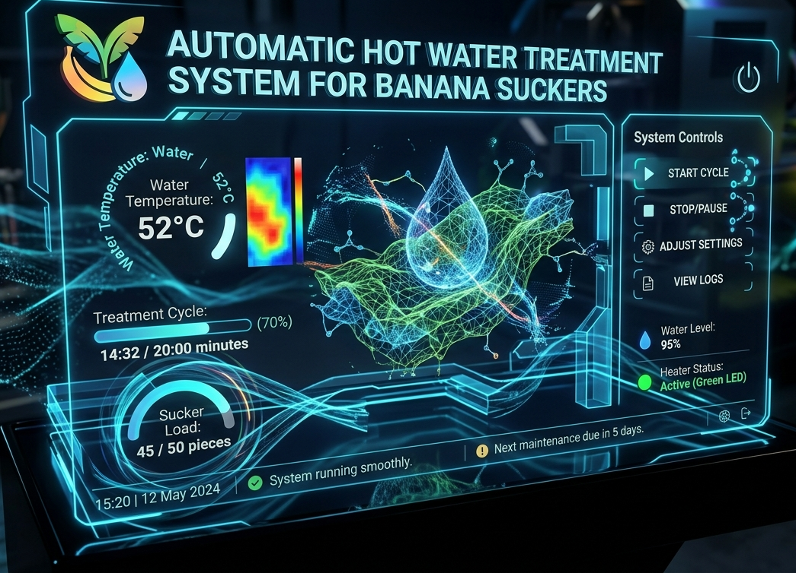
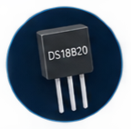
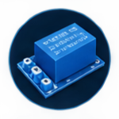
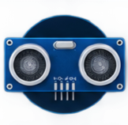
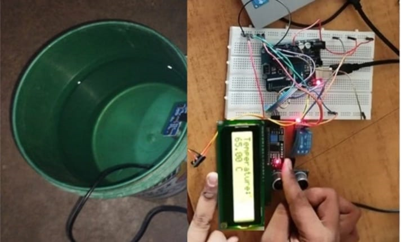
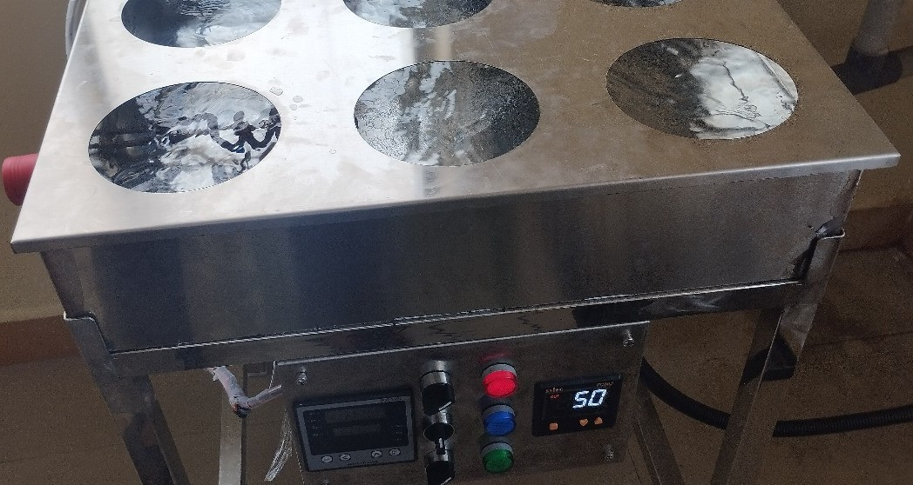
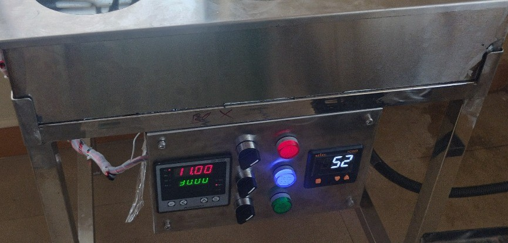
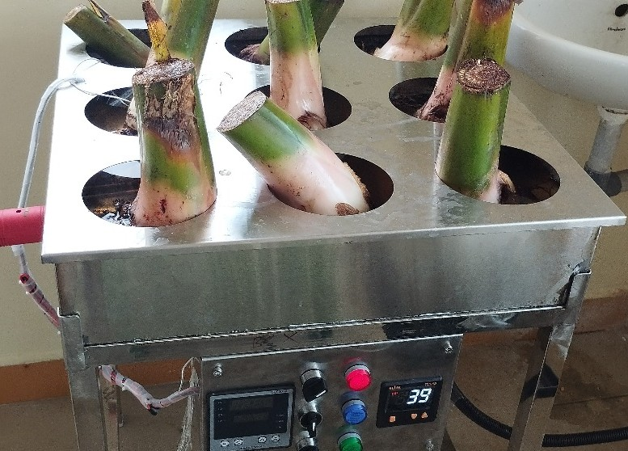
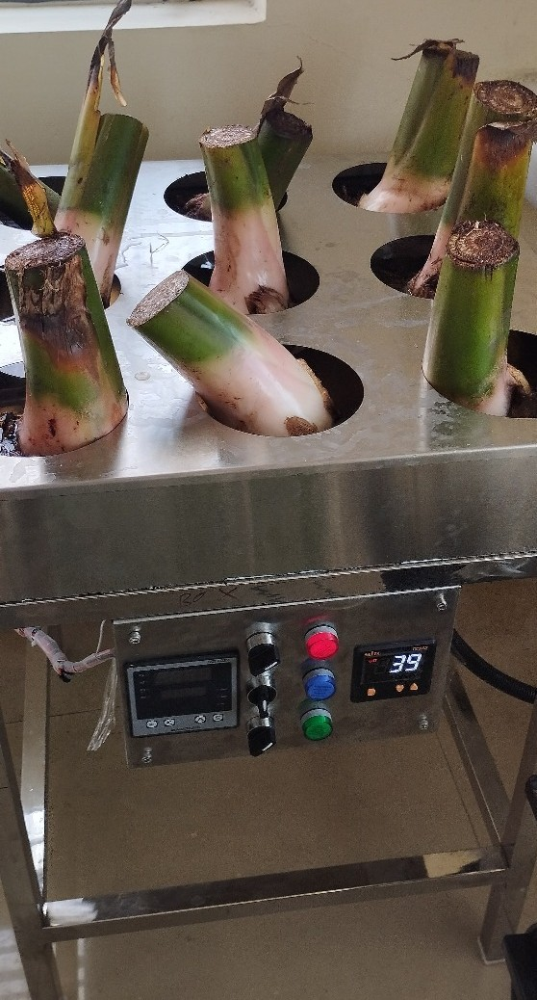

An Arduino-based automated system designed to control temperature and treatment duration for hot water treatment of banana suckers using sensors, relay-based heating and real-time monitoring.

The Automatic Hot Water Treatment System for Banana Suckers is an embedded automation solution developed to provide a controlled hot water treatment process using Arduino.
The system maintains the treatment temperature at approximately 52°C and manages a treatment cycle of about 30 minutes. Temperature sensing, heater control and system monitoring are handled automatically.
A DS18B20 sensor continuously monitors the water temperature, while a relay controls the heating element. An LCD provides real-time temperature and treatment status information.
Hot water treatment requires controlled temperature and treatment duration. Manual monitoring can require continuous attention to maintain the required conditions throughout the process.
The project addresses this by combining temperature sensing, automated heating control and timed operation into a single embedded system.
Arduino acts as the central controller and processes temperature and water-level information. Based on the treatment requirements, the system controls the heating element through a relay and provides status information through the LCD.
The ultrasonic sensor helps monitor the water level before treatment.
The DS18B20 continuously measures the water temperature.
The relay controls the heating element according to the required condition.
The treatment process is maintained for the required duration.
The heating process is stopped after the treatment cycle is completed.
Continuously monitors the water temperature using the DS18B20 sensor.
Supports an automated 30-minute treatment cycle for controlled operation.
Uses Arduino as the central controller for sensing, processing and control.
Displays temperature and treatment status through an LCD interface.



Acts as the central controller for processing sensor information and managing the treatment process.
Provides digital temperature measurements for monitoring the hot water treatment process.
Controls the heating element based on the required treatment conditions.
Provides real-time temperature and system status information to the operator.
Helps monitor the water level inside the treatment setup.
Provides the heat required to bring the treatment water to the target temperature.
The system demonstrates how embedded sensing, automated heating control and timed operation can be combined to support a controlled agricultural treatment process.





The project demonstrates how embedded systems can automate a temperature-sensitive agricultural process. The combination of Arduino control, temperature sensing, relay-based heating and real-time display provides a structured treatment workflow.